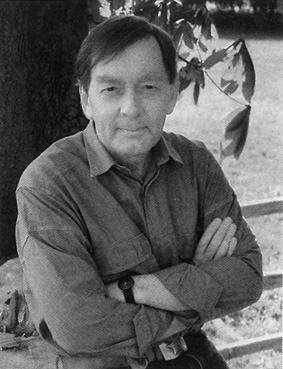

About the author

Russell Miller was born in East London and left school at sixteen. He was a Fleet Street reporter by the time he was twenty-one and became a freelance writer nearly twenty years ago. His work, notably for The Sunday Times, is syndicated throughout the world. In 1996 he moved to the Mail on Sunday. He is the author of Bunny, a widely acclaimed biography of Hugh Heffner, and, more recently, the bestselling The House of Getty. Married with four children, he lives in the peace of the Chiltern Hills.